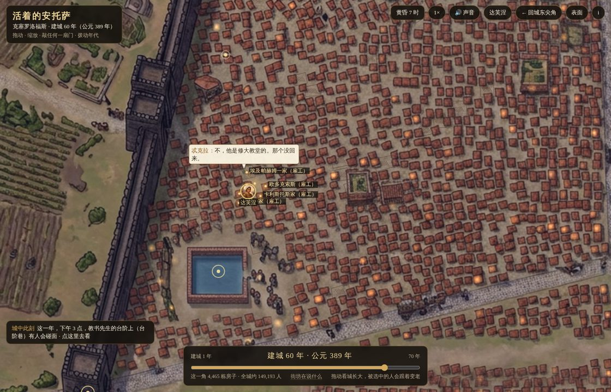
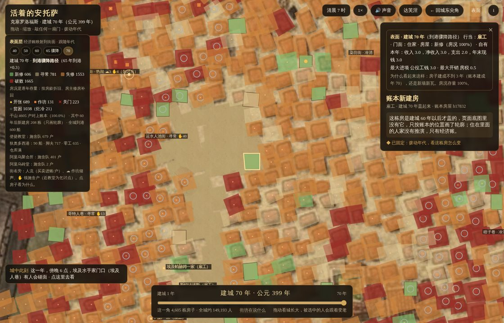
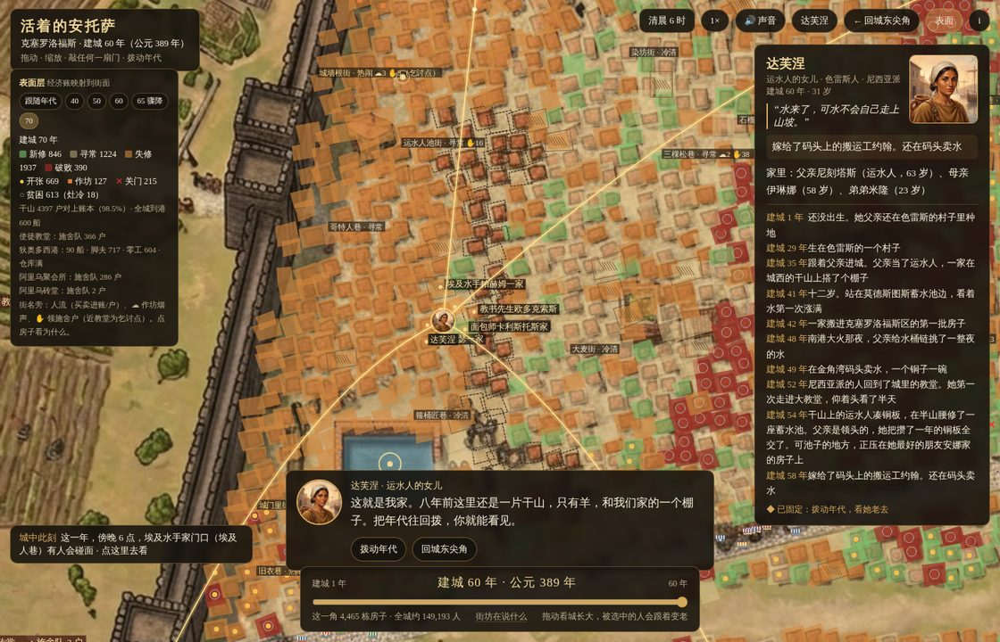

克塞罗洛福斯 · 里程碑
每一版一张主机位图，按版本排。
← 回到活着的克塞罗洛福斯

liu7 · rhythm_v24
提交 cd33f47 · 2026-11-03
生计决定作息：每户按行当点灯熄灯、开铺关铺，再加按房号哈希的错峰，黄昏的灯不再一齐亮。

liu6 · surface_v23
提交 91a16d3 · 2026-10-15
行当统一读经济层逐年生计，滑杆拉到 70 年，账本新建房画成轮廓。

liu5 · surface_v22
提交 f64ab4c · 2026-10-15
经济层映射到街面：房况、门面、人流、码头、施舍队，页面加「表面」开关。